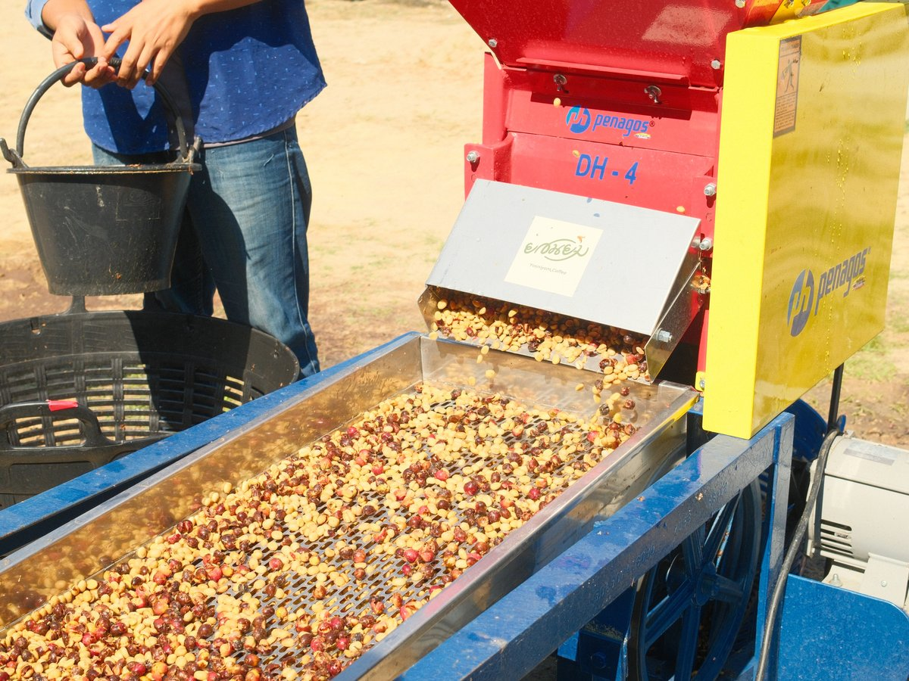
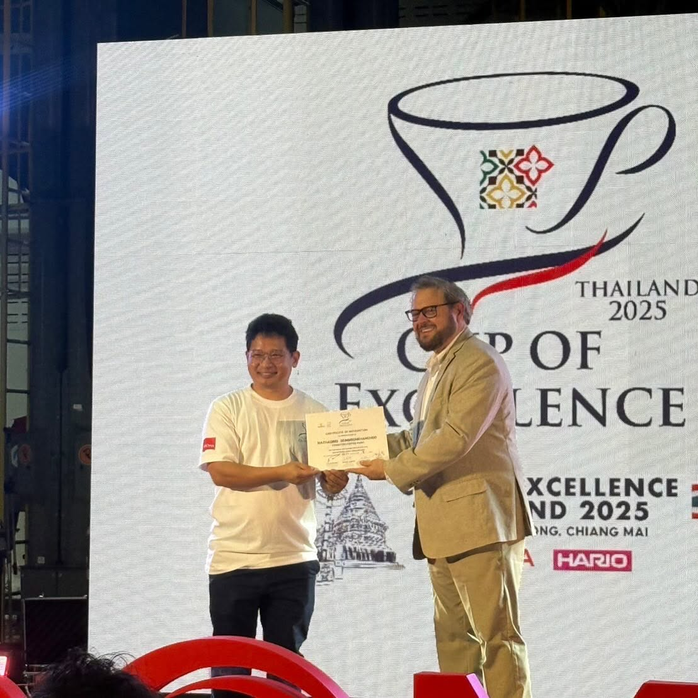
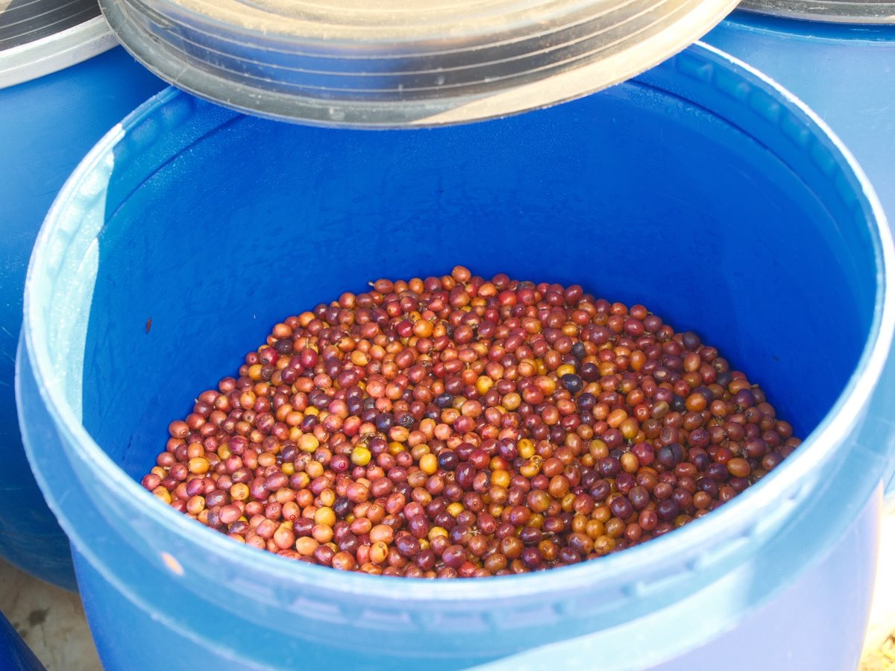
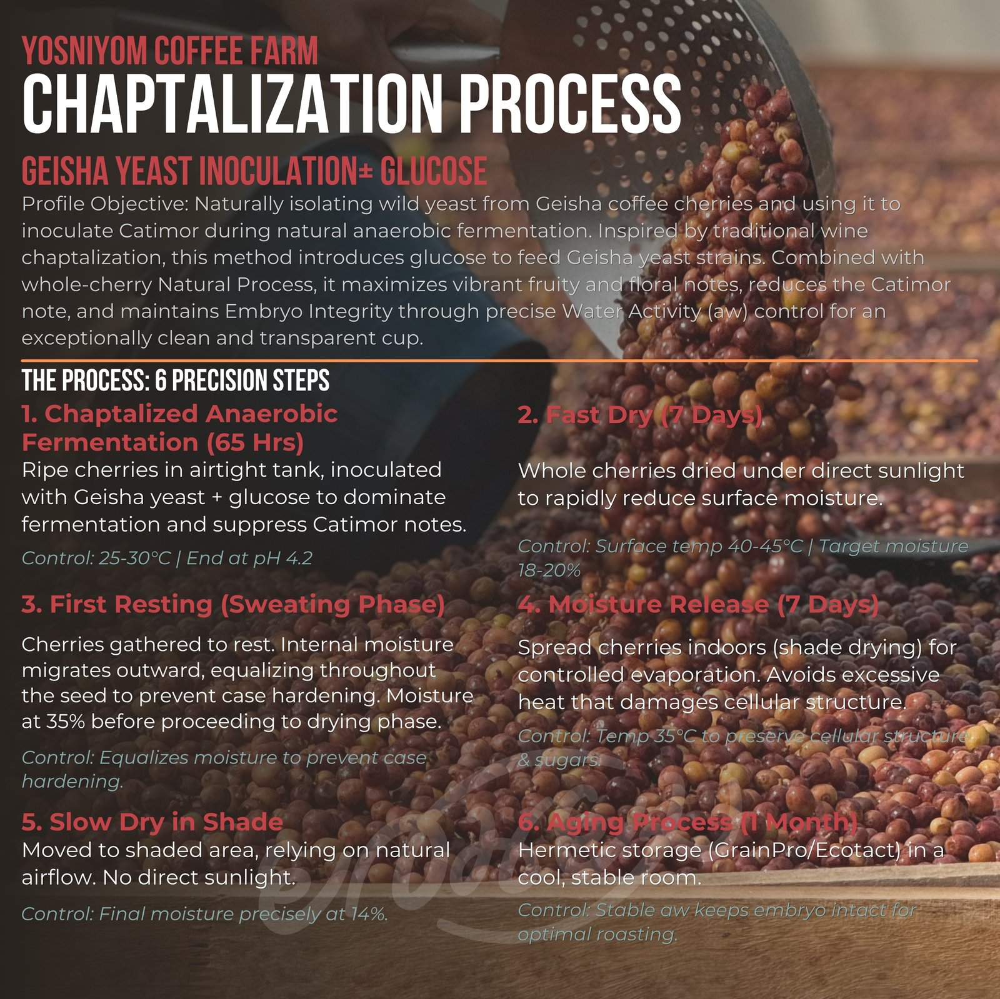
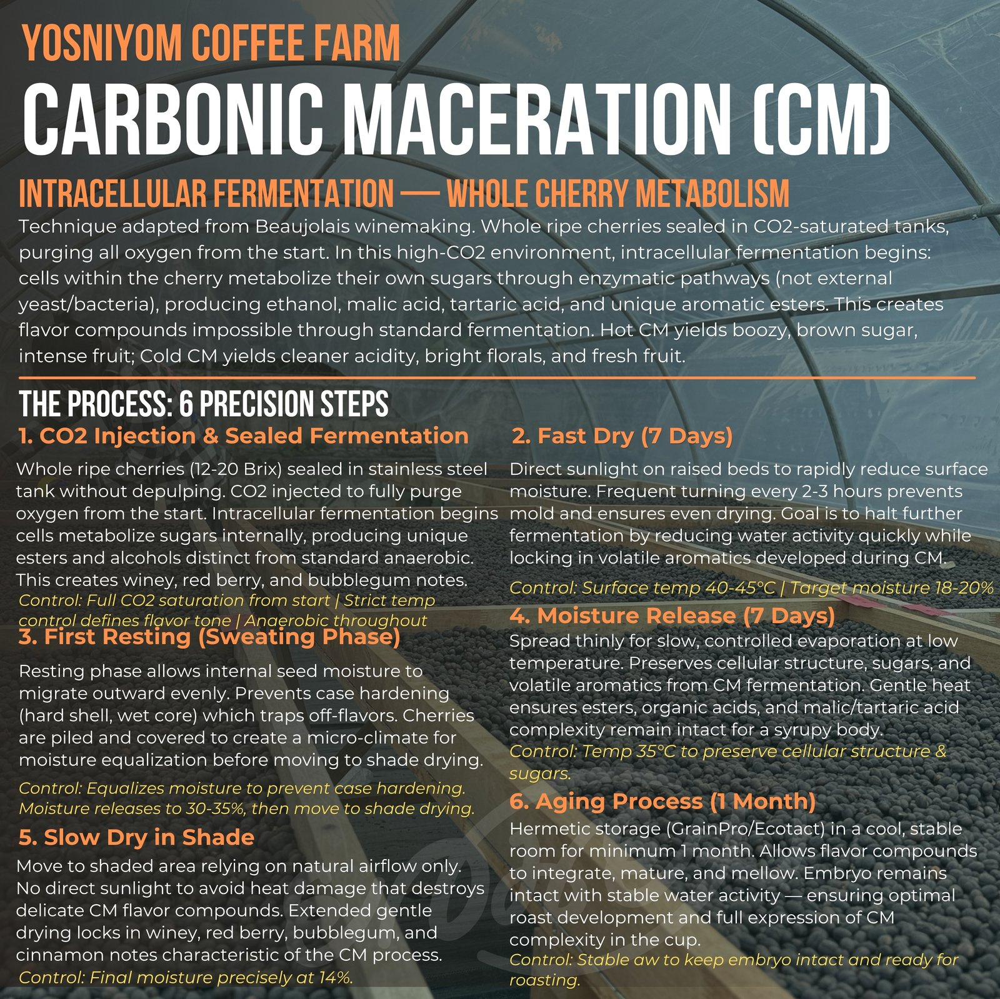
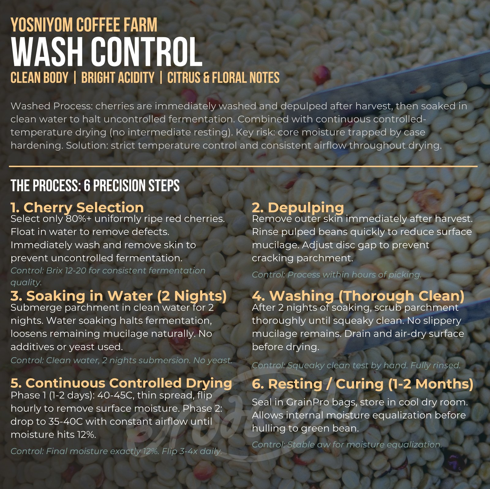

Lineup
全7プロセスから
日本向けに厳選した3種
Yosniyom Coffee Farmは独自の発酵技術で全7種のプロセスを展開。その中から日本市場に最適な3種を選定しました。
Wash
Yosniyomの素顔
水と時間が引き出す、本来の甘さ
収穫したチェリーから果肉を取り除き、水槽で発酵させたあとに丁寧に水洗する伝統的なプロセス。素材の個性をストレートに表現する手法です。Huai Nam Dang地区の標高、土壌、Yos氏の精製技術。それらすべてが素のまま、一杯に現れます。
Milk Chocolate, Red currant, Raisin, Tangerine, Plum

Carbonic Maceration
アナエロビックの、その先へ
ワインから着想を得た、特殊プロセス
収穫したコーヒーチェリーを密閉容器に入れ、CO2環境下で発酵させる手法。Anaerobic Naturalよりも精密に制御された嫌気性発酵により、独特の香味プロファイルが生まれます。ワイン醸造の技法をコーヒーに転用した、特殊プロセスの一つ。Yos氏が探求する発酵の最前線です。
Strawberry, Tropical fruit, Cherry, Vanilla, Milk Chocolate

Natural Chaptalization
COE連続入賞
Cup of Excellence 4位、89.20点
発酵段階で糖を補完することで、複層的な甘さと香りを生み出すプロセス。Yosniyom Coffee FarmがCup of Excellence Thailandで連続入賞している農園の看板ロットです。2024年4位（89.20点）。スペシャルティの最高位を、そのまま日本へ。
Great body, Oily, Tea like mouthfeel, Matcha tea, Sweet, Sweet honey, Juicy, Long lingering, Cherry

Natural Chaptalization
ナチュラル チャプタリゼーション

-
1. チャプタリゼーション・アネロビック発酵（65時間）完熟チェリーを密閉タンクで嫌気性発酵。ゲイシャ酵母＋グルコースを接種し、カティモール由来の風味を抑えつつ華やかな果実味を引き出す。温度25-30°C、pH 4.2で終了。
-
2. ファストドライ（7日間）ホールチェリーを直射日光下で急速乾燥し表面水分を除去。表面温度40-45°C、目標含水率18-20%。
-
3. ファーストレスティング（スウェッティング期）チェリーを積み重ね密閉。内部の水分を均一化してケースハードニングとオフフレーバーを防止。含水率35%で次工程へ。
-
4. モイスチャーリリース（7日間）屋内日陰乾燥で水分を制御。温度35°Cで細胞構造と糖を保護。
-
5. スロードライ（日陰乾燥）自然風で最終乾燥、直射日光を避ける。含水率を14%に厳密管理。
-
6. エイジング（1ヶ月）GrainPro/Ecotactでの密閉保管。安定した水分活性で胚を保護し、最適な焙煎状態へ。
Carbonic Maceration (CM)
カーボニック マセレーション

-
1. CO2注入 & 密閉発酵完熟ホールチェリー（Brix 12-20）をステンレスタンクに果皮ごと密閉、CO2で酸素を完全排除。細胞内発酵によりワイン・レッドベリー・バブルガムのニュアンス。
-
2. ファストドライ（7日間）レイズドベッドで直射日光下、2-3時間ごとに撹拌。CM由来の揮発性アロマを閉じ込める。温度40-45°C、含水率18-20%。
-
3. ファーストレスティング（スウェッティング期）内部水分を均等化しケースハードニングを防止。含水率30-35%で次工程へ。
-
4. モイスチャーリリース（7日間）薄く広げ低温で蒸発。CM由来のエステルと有機酸の複雑性を保ちシロップ様のボディに。温度35°C。
-
5. スロードライ（日陰乾燥）自然風のみで乾燥。直射日光による熱ダメージを避け、繊細なCMフレーバーを保護。含水率14%へ。
-
6. エイジング（1ヶ月）GrainPro/Ecotactで最低1ヶ月密閉保管。フレーバー化合物を統合・成熟・まろやかに。
Wash
ウォッシュド

-
1. チェリーセレクション完熟した赤いチェリーを80%以上の均一性で選別。水浮遊で欠点豆除去。収穫後即座に洗浄・皮除去。Brix 12-20で発酵品質を安定化。
-
2. デパルピング（果肉除去）収穫直後に外皮除去。素早くすすぎ、表面ミューシレージを削減。ディスクギャップ調整でパーチメントの割れを防止。
-
3. ウォーターソーキング（2晩）パーチメントを清水に2晩浸漬。発酵を停止し、残留ミューシレージを自然に緩める。添加物・酵母は不使用。
-
4. ウォッシング（徹底洗浄）ぬめりが残らないまで擦り洗い。手触りでキュッとした感触になるまで確認。洗い流し、表面を風乾。
-
5. 連続温度管理乾燥フェーズ1（1-2日）：40-45°Cで薄広げ1時間ごとに撹拌。フェーズ2：35-40°Cで一定の通気を保ちながら含水率12%まで乾燥。
-
6. レスティング / キュアリング（1-2ヶ月）GrainProバッグに密閉、涼しく乾燥した部屋で保管。脱穀前に内部水分を均等化。